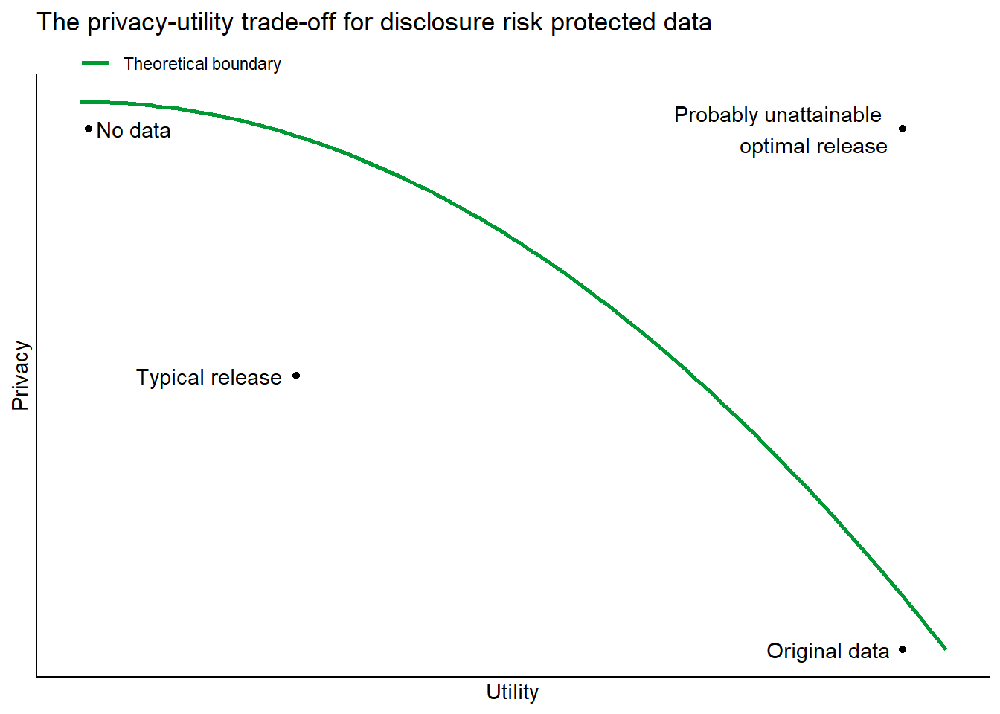

Statistical Disclosure Control
Introduction
Collected research data often contains sensitive information about individuals. For example, social scientists might collect data on income or criminal behavior, and health data often contains medical information of individuals. Such private information may harm the people involved if disclosed to the public. Even if no harm is incurred, the trust of individuals in the data collector, or scientific institutions in general, may be damaged if such data is revealed.
At the same time, broad data availability is very valuable to researchers and governmental institutions alike. Using previously collected data, researchers may answer novel research questions and governmental institutions may improve policy. In addition to these high-level applications, open data can also be used to evaluate the reproducibility of research projects or serve as realistic data in education. That is, open data is valuable for many applications, but simply releasing the data is often not an option.
The first step in the process of releasing data - both the actual and synthetic data - is to anonymize it (see for instance our Data Anonymization tutorial). Anonymization requires that potentially identifying information is removed from the collected data. Examples of such identifying information are names, addresses, IP-addresses, that can often be removed without losing important information. However, after de-identifying the data, your data might still contain information that can lead to indirect identification of individuals, for example because the data can be linked to external data sources. Especially in today’s age of massive data collection, data sources can be linked in surprising ways. For example, in 2006, Narayanan and Shmatikov (2007) reidentified Netflix users by linking their reviews to IMDb data. While likely harmless for most, it exposed sensitive details, such as sexual orientation, leading to potential privacy risks.
Statistical disclosure control
The term “Statistical disclosure control” refers to a suite of statistical methods that aim to protect collected data such that they can be safely released to the public without disclosing confidential information about these individuals. The goal of statistical disclosure control is to release a data set that is as similar as possible to the original data, while at the same time ensuring that no individual can be identified from the released data, nor any sensitive information can be inferred (Hundepool et al. 2024). Disclosure is here defined as the release of information about individuals that would not have become public if the data would be kept private. That is, the release of information that is already in the public domain would not be considered a disclosure. Two types of disclosure risk are commonly considered:
- Re-identification disclosure occurs when individuals can be singled out from the released data, resulting in confidential data being leaked. For example, when data is released on airports and there is an airport with more than 50.000 employees in the Netherlands in the data, one can be fairly confident that this concerns Schiphol Airport. Likewise, if data is released on a patient that has spent a remarkably long time in some hospital, the identity of this patient might become known.
- Attribute disclosure refers to situations in which characteristics of individuals can be learned with (near) certainty from the data release. For example, if a release discloses that all inhabitants of a street in some city are on welfare, knowing that a person lives in this street discloses information on their welfare status, even without knowing which record corresponds to this person.
Every data release requires that both re-identification disclosure and attribute disclosure risks are “sufficiently” small. What it means for the risks to be “sufficiently small” very much depends on the case at hand, but we will discuss some general evaluation strategies of disclosure risk in Section Evaluating synthetic data quality. At the same time, the goal of a data release is to allow others to do something useful with the released data, and for this purpose, the released data should be similar to the original data.
TipSimilarity, in this context, means that the released, but protected, data can be used for the same purposes as the original data.
To a reasonable degree, analyses on the released data should yield results similar to results obtained from the original data. Similarity does not mean that the released records are similar to the original records, but rather that over the whole, the distributions of the observed and released data are similar.
The privacy-utility trade-off
Statistical disclosure control often yields a trade-off between privacy and utility: the stricter the data protection, the better the privacy of respondents is protected, but the more information is lost, and the lower the utility of the data. That is, if privacy is (almost) not an issue, the original data or a very lightly perturbed version of the original data can be released. For example, data access servers often work with only slightly altered versions of a collected data set. If stricter privacy regulations are in place, more information will be redacted, or the released data will be perturbed to a larger degree. Hence, stricter privacy typically comes with lower data utility.
This idea is visually displayed in Figure 1. When maximum privacy is required, nothing about the original data can be released. This strategy is trivially safe, but suboptimal from a data-users perspective: they can do nothing with it. As we stretch the privacy requirements, some utility is possible: perhaps we can do some simple analyses, like evaluating the means and standard deviations for some variables. If we further lower our privacy requirements, more advanced analyses become feasible, and, in principle, there is more we can learn from the released data. Ultimately, we may release the original data, but the cost hereof is high: with regards to the individuals and their information in our data, there will be no privacy left. It is probably redundant to remark that protection strategies that perturb the data significantly are not inherently safe. That is, particular strategies may reduce the utility substantially, without making any headway regarding the protection of privacy. As a contrived example, consider the case where only the non-sensitive variables are removed from the data. If these variables are interesting from an analytical perspective, data utility is reduced substantially without improving the privacy of the respondents.
Finally, note that the level of required protection depends on the sensitivity of the data at hand. Data from an insensitive experiment with only very general personal information may require very little protection, while an extensive survey on criminal behavior or sensitive issues should typically be well-protected. In protecting the individuals of the sensitive survey, more information may need to be sacrifized to provide proper protection. At the same time, the level of utility required depends on the problem at hand: if the released data should allow to replicate complex analyses to a reasonable degree of accuracy, more sophisticated disclosure methods are required than when solely some marginal quantities (e.g., means and standard deviations) should be preserved. Hence, the privacy-utility trade-off is relative to the re-use scenario: a released data set can be very useful for some purposes, but almost useless for others.
Conventional statistical disclosure control methods
In practice, many techniques for statistical disclosure control have been developed over the last years for microdata; that is, data on individual observations, potentially measured at multiple locations, in contrast to tables with aggregated data. Typically, these techniques limit the amount of information that is released, thereby introducing statistical bias and variance (Fienberg and Slavković 2011). For example, one might set a threshold to variables such that extreme values are not released, which typically creates bias in the distribution of the released values. As an other example, adding noise to observed values will increase the variance of the released data relative to the observed data. Common methods that have traditionally been used for statistical disclosure control are (e.g., Reiter 2011; Hundepool et al. 2024):
- Aggregation: collapsing categories into larger overarching categories (e.g., towns into municipalities or regions, divisions into companies).
- Rounding: replacing original values with their rounded counterpart (e.g., income in thousands of euros, age in years).
- Top coding: cap all values higher or lower than some threshold to this threshold (sometimes, only relatively extreme values, such as very large income values, yield a high risk of disclosure; this technique is also called “Winsorizing”).
- Microaggregation: combine observations into groups of some size where people within a group are maximally similar, calculate the group mean for each variable used to form groups, and replace values on these variables by the respective group mean.
-
Suppression: remove sensitive or identifying values from the released data directly (i.e., setting particular values to “missing”/
NA, or even removing entire variables). - Adding noise: random noise is added to the observed values, such that the released value is different from the underlying observed value.
Each of these methods either introduces errors in the data, such that the released information is not entirely accurate, or limits the amount of information that is released in such a way that disclosure risks are small. However, an important limitation of these methods is that relationships between variables are usually not accounted for. While it is possible for some of these approaches to be applied on a multivariate level, this is often not easy and typically not done in practice. Thus, when relationships between variables are of interest, for example when the released data should allow to reproduce regression analyses on the observed data, these traditional methods might distort the data too much. Synthetic data might provide a better solution, as instead of distorting the data, it attempts to model the multivariate distribution of the data, and thus allows to capture relationships between variables. The idea of synthetic data will be more thoroughly explained in the subsequent section.
TipSummary
- Open research data provides a wealth of opportunities for follow-up research, but often contains sensitive information, and can thus rarely be shared without data protection measures.
- Every released data set must be anonymized, but mere anonymization is rarely enough: the data might still contain identifying variables or linkage to external sources can lead to re-identification.
- Statistical disclosure control aims to enable data release while preventing re-identification and attribute disclosure risks.
- Disclosure limitations inherently come with the privacy-utility trade-off: more stringent protection strategies typically remove more information from the data.
- Traditional disclosure techniques (aggregation, suppression, top coding, rounding, noise, microaggregation) reduces risk but may lead to unacceptable utility degradation; synthetic data may provide higher utility at similar privacy levels.
References
Fienberg, Stephen E., and Aleksandra B. Slavković. 2011. “Data Privacy and Confidentiality.” In International Encyclopedia of Statistical Science, edited by Miodrag Lovric. Springer Berlin Heidelberg. https://doi.org/10.1007/978-3-642-04898-2_202.
Hundepool, Anco, Josep Domingo-Ferrer, Luisa Franconi, et al. 2024. Handbook on Statistical Disclosure Control.
Narayanan, Arvind, and Vitaly Shmatikov. 2007. How to Break Anonymity of the Netflix Prize Dataset. https://arxiv.org/abs/cs/0610105.
Reiter, Jerome P. 2011. “Statistical Approaches to Protecting Confidentiality in Public Use Data.” In International Encyclopedia of Statistical Science, edited by Miodrag Lovric. Springer Berlin Heidelberg. https://doi.org/10.1007/978-3-642-04898-2_537.